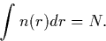

Thomas-Fermi theory marks a change in approach from Hartree and Hartree-Fock theory, as it was the first method to propose using the electronic charge density as its fundamental variable instead of the wavefunction. It is thus the earliest form of density functional theory.
The model can be understood with reference to Figure 2.1. Although the charge density is that of a non-uniform electron gas, the number of electrons in a given element, dr, can be expressed as n(r)dr, where n(r) is the charge density for a uniform electron gas at that point. It is then possible to express the energy as a function of n(r),
| (5) |
Again the variational principle is applied and the energy, ETF is minimised subject to the condition

A Lagrange parameter of  incorporates this and leads to the
Thomas-Fermi self-consistent equations,
incorporates this and leads to the
Thomas-Fermi self-consistent equations,
Note that  is equivalent to the chemical potential,
. This approach is extremely simple,
and is qualitatively correct for atoms. However it does not give a
binding energy for molecules, and the proof is not rigorous. To
overcome these problems it is necessary to move on to the work of
Hohenberg, Kohn and Sham.
is equivalent to the chemical potential,
. This approach is extremely simple,
and is qualitatively correct for atoms. However it does not give a
binding energy for molecules, and the proof is not rigorous. To
overcome these problems it is necessary to move on to the work of
Hohenberg, Kohn and Sham.